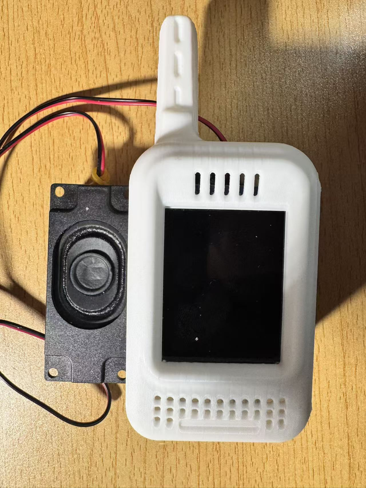

Embedded Control
2026
无刷直流电机闭环控制
STM32-based BLDC motor control project with PCB, schematic, experiment report, and Keil firmware modules.
重点展示编码器反馈、PID/FOC 控制、ADC、OLED 显示和硬件调试。
- STM32F10x firmware, Keil project, C drivers
- PCB and schematic PDFs included
- Closed-loop motor-control experiment archive
Open project files

AIoT Accessibility
2026
听障双向沟通终端
基于 ESP32-S3-CAM + PC/cloud pipeline 的视觉康复交互终端。手语经 MediaPipe + LSTM 识别后由大模型润色，
语音链路支持 ASR 字幕和 TTS 播放。
- Sign-language recognition measured at 97-99%
- ESP32 firmware, Python tools, cloud APIs
- Photos and core code are curated for review
Open project files
Digital Logic
2026
FPGA 多功能数字秒表
Vivado / Verilog stopwatch project for EGo1 FPGA board. It implements clock division, key debounce,
up/down timing, pause/resume, lap review, LED status, and seven-segment display scanning.
- 100MHz clock divider and 1ms display scan
- Run, stop, countdown, lap memory states
- Verilog source and XDC constraints included
Open project files
Web Product
2026
GOODALPHABET / Gu的辞書
A Japanese and vocabulary-learning web product with a Next.js + shadcn/ui frontend and FastAPI backend.
This archive points to the original project under Yeyu-Tanxue; erikpsw is a fork.
- Next.js App Router, Auth0, Stripe, Vercel
- FastAPI routes, wordbook data, learning flows
- Original repository: Yeyu-Tanxue/GOODALPHABET
Open project files